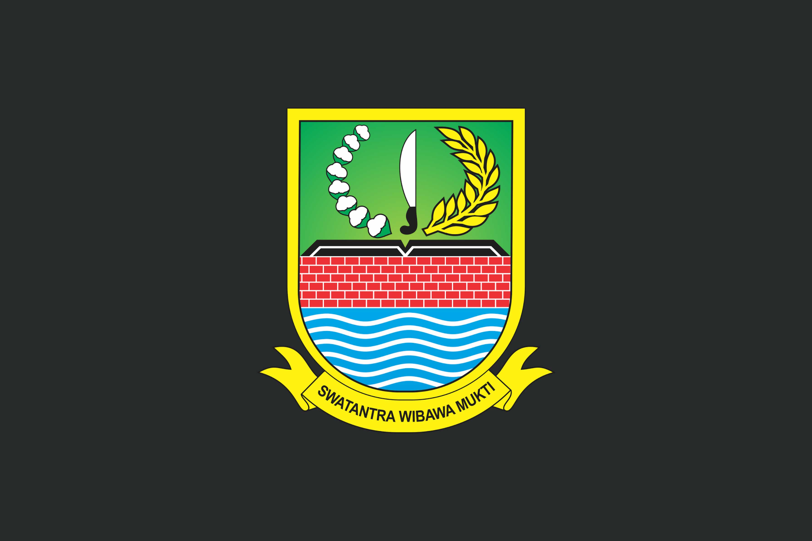

(Laboratory Computer Technician) Agustus 2017-April 2020
Tergabung dalam tim ICT UNBK yang bertugas untuk mempersiapkan infrastruktur ujian nasional berbasis komputer (UNBK)
Memasang dan mengkonfigurasi aplikasi UNBK pada semua perangkat peserta dan server
Memasang dan mengkonfigurasi sistem operasi pada komputer
Memasang dan mengkonfigurasi aplikasi yang dibutuhkan, seperti software office, perangkat lunak desain, atau aplikasi khusus lainnya
Melakukan perawatan rutin terhadap komputer, seperti membersihkan debu, mengganti komponen yang rusak, dan melakukan upgrade
Melakukan perbaikan terhadap perangkat komputer yang mengalami kerusakan
Mengelola jaringan komputer di laboratorium, termasuk konfigurasi router, switch, dan firewall

DPMPTSP KABUPATEN BEKASI
(IT Helper) November 2020 - Mei 2022
Memecahkan masalah pada perangkat keras komputer, printer, dll. dan perangkat lunak aplikasi, sistem operasi
Mengatur konfigurasi perangkat keras dan perangkat lunak
Memberikan panduan dan bantuan kepada pengguna dalam menggunakan perangkat dan aplikasi (Digital Signage)
Mengelola jaringan komputer, termasuk konfigurasi router, switch, dan firewall
Mengelola server, termasuk instalasi sistem operasi server, konfigurasi layanan, dan backup data
Melakukan pembaruan software secara berkala
Melakukan perawatan rutin perangkat keras
PT BIMA ADIKARYA PERSADA
(IT Technician Support) Mei 2022 - Sekarang
Membuat dan mengembangkan website, melakukan testing website, debugging kode website, memelihara dan menjamin fungsionalitas website, memastikan desain website responsif PT Bima Adikarya Persada.
Memberikan bantuan teknis kepada karyawan yang mengalami kesulitan dalam menggunakan sistem absensi BAPos.
Menindaklanjuti laporan klien perihal keamanan di kawasan jababeka dengan sistem manajemen JSmart.
Melakukan perawatan rutin pada sistem komputer dan jaringan untuk memastikan kinerja yang optimal. Ini termasuk melakukan backup data, membersihkan virus, dan mengupdate sistem operasi
Memberikan bantuan teknis kepada pengguna komputer, baik itu karyawan, pelanggan, atau pengguna lainnya
Mengelola jaringan komputer, termasuk mengatur router, switch, dan firewall
Memperbaiki kerusakan pada perangkat keras komputer, seperti mengganti komponen yang rusak atau memperbaiki masalah pada motherboard